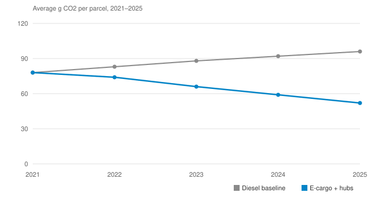
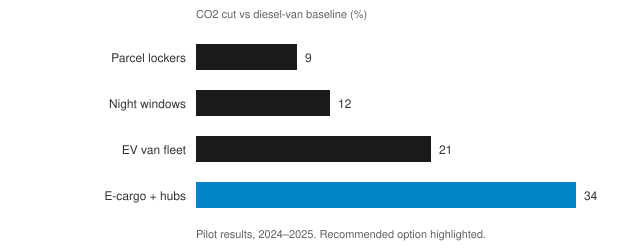

White paper
Cutting last-mile delivery emissions
What two years of pilots taught us about e-cargo bikes, micro-hubs, and the diesel baseline.
Executive summary
Last-mile delivery now accounts for the fastest-growing share of urban transport emissions. Between 2024 and 2025 we ran twelve pilots across nine cities to find out which interventions actually move the number — and which only look good in a slide deck.
The short version: e-cargo bikes paired with micro-hubs cut per-parcel emissions by 34% against the diesel baseline, at a cost increase of four cents per parcel. Everything else helped, but nothing else came close.
1Where the emissions come from
A diesel van delivering 120 parcels a day emits roughly 96 grams of CO2 per parcel by 2025, up from 78 grams in 2021. Demand grew faster than routing software could compensate: more stops, tighter time windows, and more failed first attempts.

2What actually moved the needle
Four interventions survived contact with operations. Parcel lockers and night windows are cheap and nearly free to run, but their ceiling is low. Full EV van fleets help more, at a real cost. E-cargo bikes combined with micro-hubs were the outlier in every city we tried them.
| Intervention | Pilot cities | CO2 cut | Cost / parcel |
|---|---|---|---|
| E-cargo bikes + micro-hubs | 6 | 34% | +€0.04 |
| EV van fleet | 9 | 21% | +€0.11 |
| Night delivery windows | 3 | 12% | −€0.02 |
| Parcel lockers | 12 | 9% | −€0.06 |
- Micro-hubs matter more than the bikes: without a hub within 2 km, bike productivity collapses.
- Night windows work only where noise rules allow them — two of five cities said no.
- EV vans underperform in winter; plan for a 15% range penalty in northern pilots.
hubs = find_micro_hubs(city, max_distance_km=2)
routes = assign_bikes(hubs, fleet=40)
cut = simulate(routes, baseline="diesel")
print(f"CO2 cut: {cut:.0%}") # 34%
3Recommendation
Fund hubs first and bikes second: one micro-hub unlocks roughly forty bike routes, while bikes without a hub save almost nothing. Keep lockers and night windows as complements, not substitutes. That sequencing is the difference between a pilot that photographs well and one that compounds.